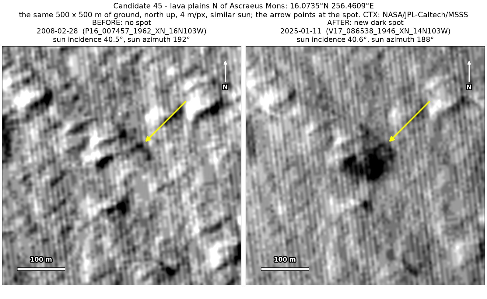
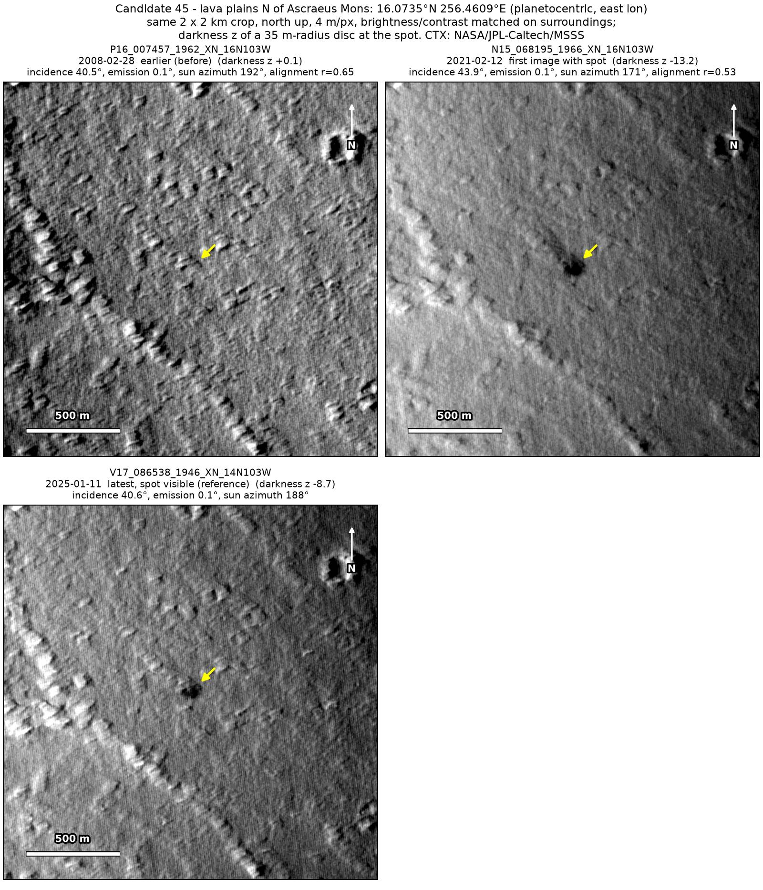
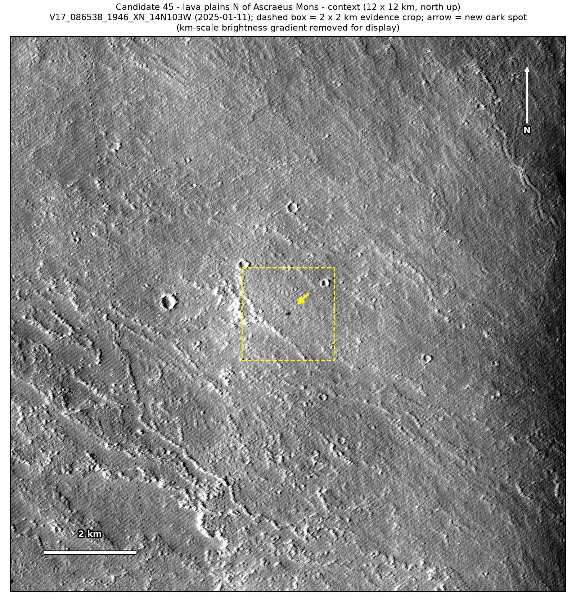
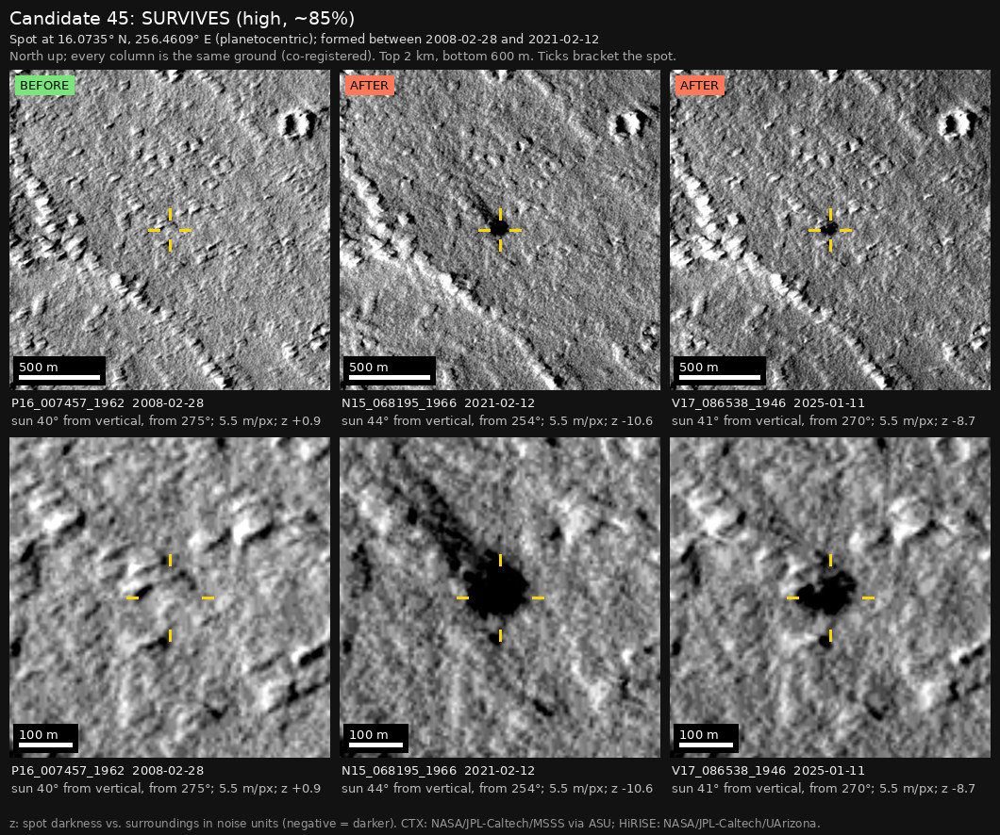
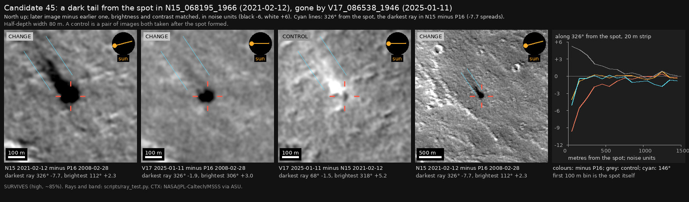

Professor of Mathematics
Paata Ivanisvili
Department of Mathematics, University of California, Irvine

← Possible new impact sites on Mars
Candidate 45: Lava plains north of Ascraeus Mons
Strong · roughly 85%

What changed. A compact dark spot 80 to 85 m across appeared on the lava plains north of the volcano Ascraeus Mons between February 2008 and February 2021. In February 2021 a dark tail about 80 m wide ran from it to the north-west for several hundred metres; by January 2025 the tail had faded, while the spot was still there, slowly fading.
Why it may be a new impact. The only earlier image, from February 2008, was taken under the same sun as the January 2025 one and would have shown the spot, but shows nothing there, so the spot is not a shadow; the plains are flat, so it is not a slope streak. A tail that starts at the spot and fades within four years while the spot lasts fits a ray of material thrown out by an impact, or dark material blown downwind from it. A dust devil that stalled would leave a track ending at a dark patch, but that patch would be expected to fade with the track.
- Location
- 16.074° N, 256.461° E (103.539° W)
- Absent
- 28 February 2008
- Present
- 12 February 2021 and 11 January 2025
- Size
- Compact dark spot 80 to 85 m across; in 2021, a tail about 80 m wide and several hundred metres long
- Confidence
- Strong candidate; roughly 85% that it is a new impact.
- Caveat
- Only one earlier image exists, so the window is 13 years long. It first shows in a 2021 image, so the camera teams may already have it on their unpublished lists; but it lies outside every footprint of the high-resolution HiRISE camera, and the teams normally photograph a new impact with HiRISE within months of noticing it. Like every candidate here, it is unconfirmed: see the caveat.



